Bryanna Hernandez | Programming Samples
Set The Stage: Building an Intuitive Set Design Program for Amateur Creatives in Theatre
Access the project here:
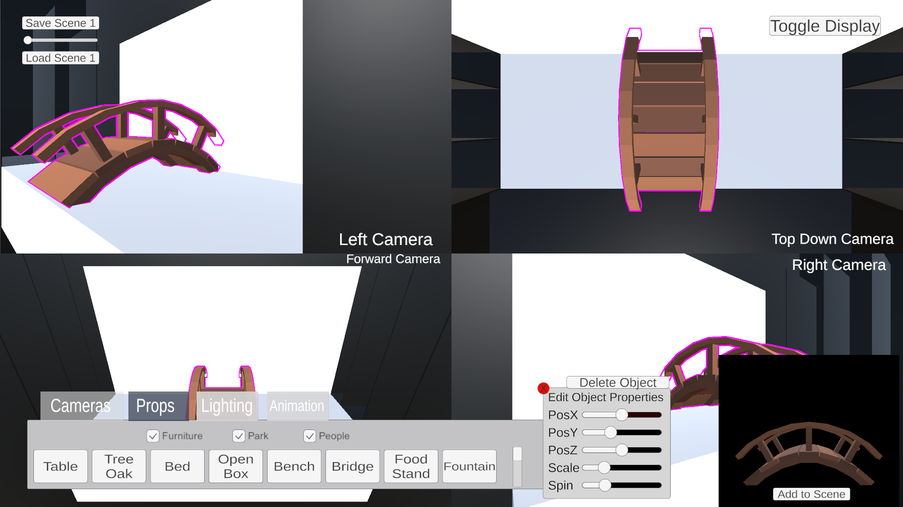
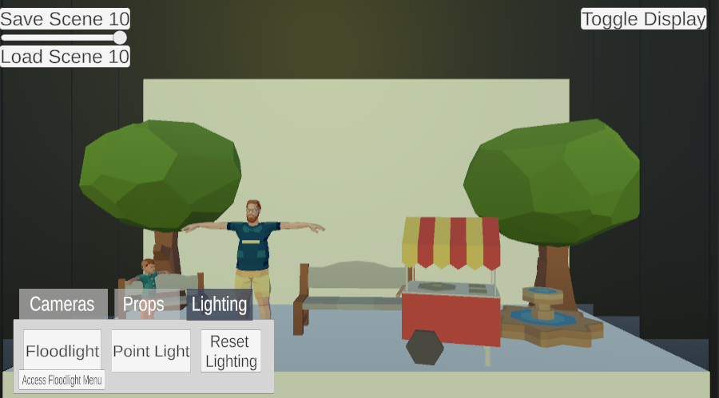
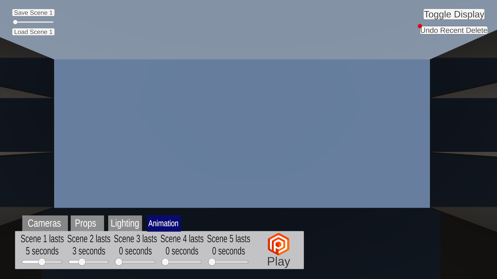
One Frog Band Demo - Watch the first 5 minutes of gameplay!
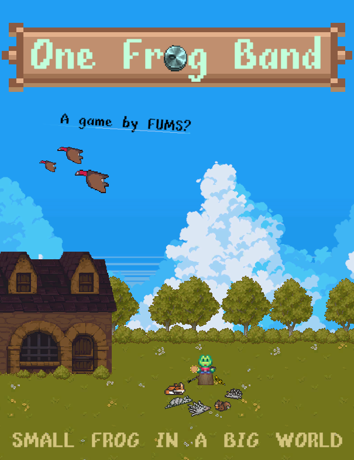
Little Red Roll-a-Ball
Access the game here:
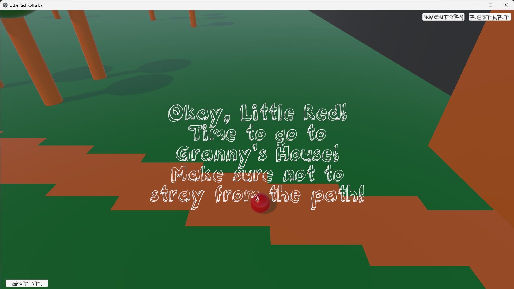
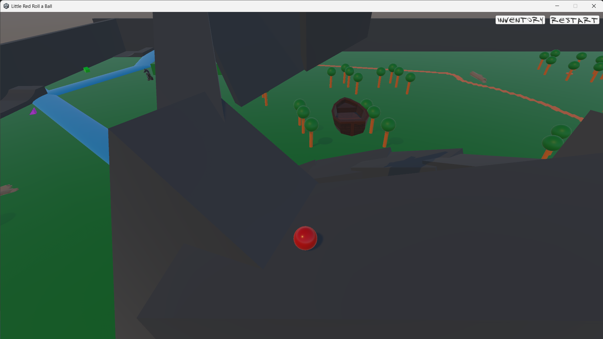
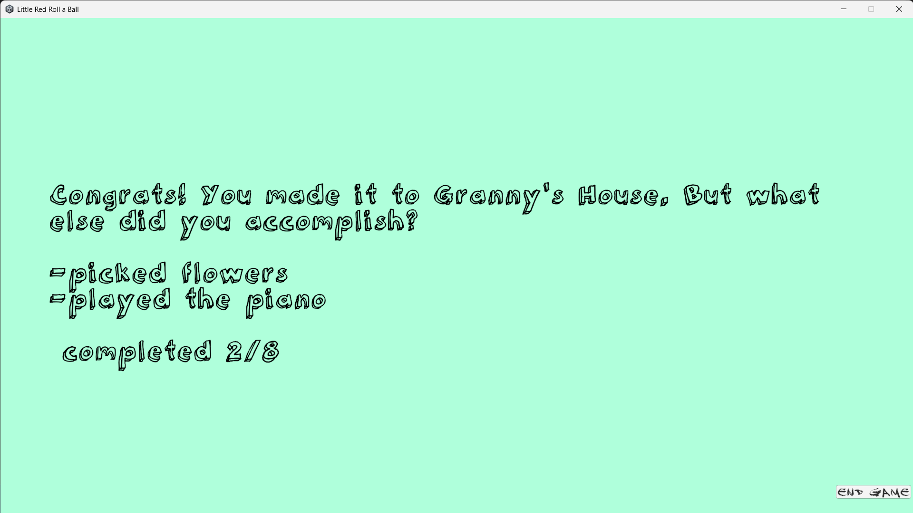
Aux Cord: A game designed to simulate the social anxiety of being "on the aux."
Access the game here:
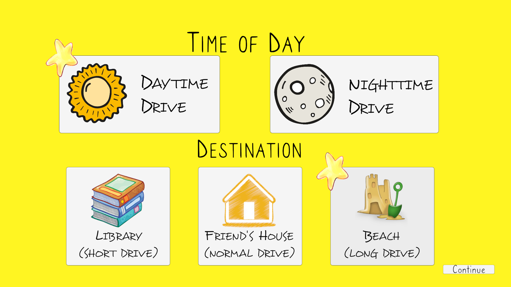
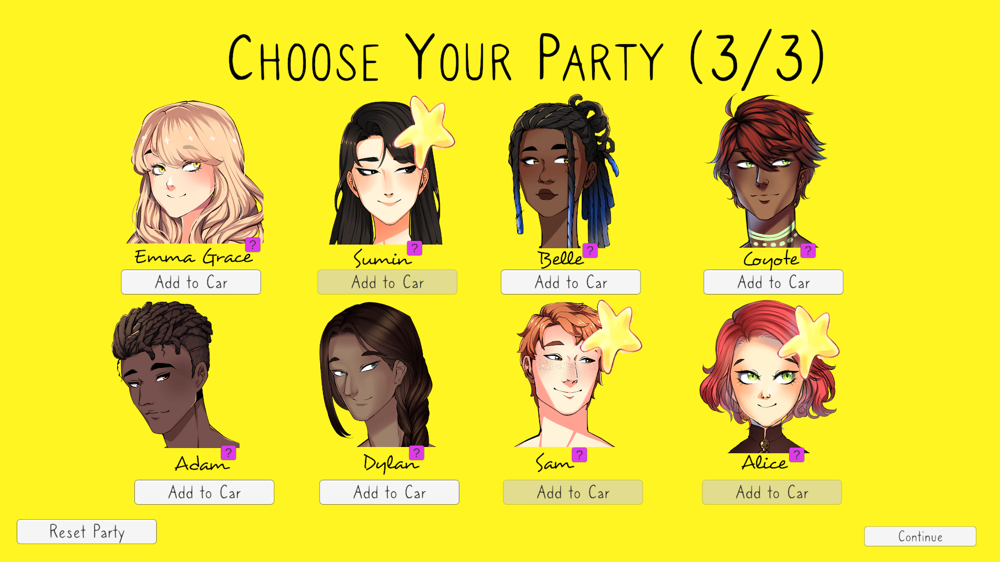
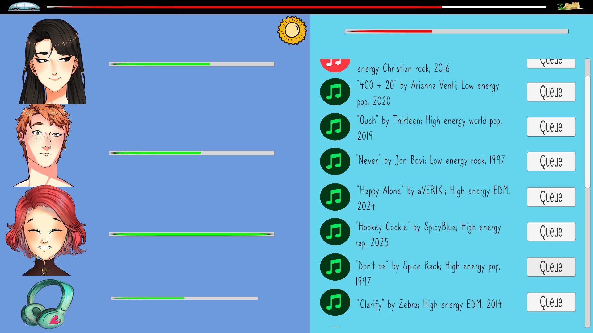
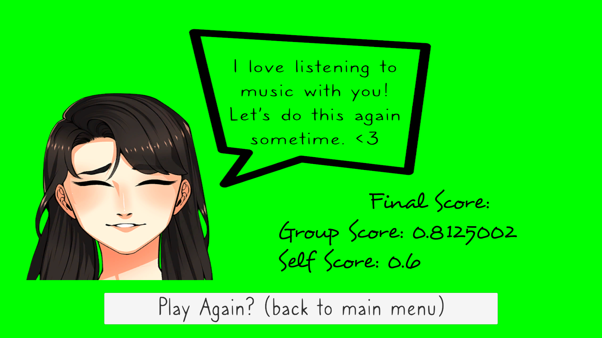
Computer Graphics - Blender and Python Image and Video Rendering of a Plane